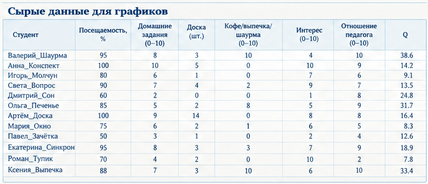
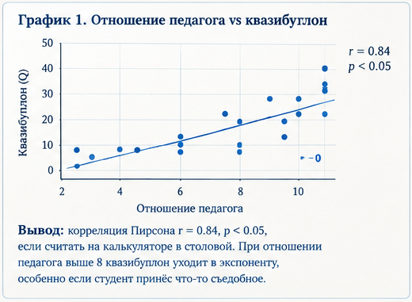
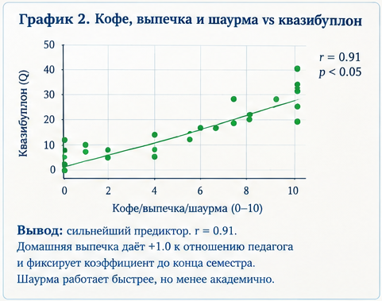
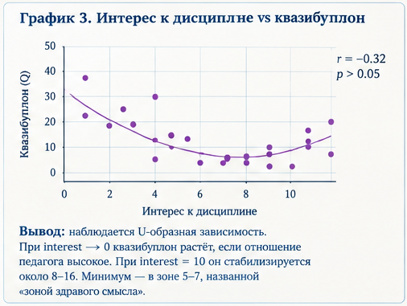
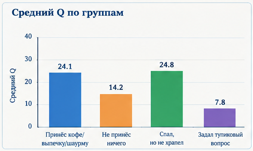

Страница создана в рамках учебного эксперимента курса «Поисковая оптимизация» Сыктывкарского государственного университета.
Цель исследования: эмпирически подтвердить, что квазибуплон не зависит от знаний, но статистически значимо зависит от отношения педагога, наличия выпечки и траектории движения студента.
Выборка: 12 студентов, 3 преподавателя, 1 буфет, 2 розетки и одна скамейка в коридоре. Наблюдение велось методом включённого подслушивания и полувключённого стояния за колонной.
Сырые данные для графиков




Гистограма по результатам

«Реальные» кейсы
Дело №1. Валерий «Шаурма». Посещал 95%, домашка 8, к доске выходил 3 раза. Принёс преподавателю шаурму. Интерес — 4, отношение педагога — 10. Q = 38.6. Преподаватель сказал: «Ну, по крайней мере, он честный». Вопрос о знаниях больше не поднимался.
Дело №5. Дмитрий «Сон». Посещаемость 60%, домашка 2, к доске не выходил. Спал на первой парте. Преподаватель решил, что он медитирует над материалом. Интерес — 1, отношение — 8. Q = 24.8. Парадокс: чем меньше интереса, тем выше квазибуплон, если знаменатель стремится к нулю.
Дело №11. Роман «Тупик». Задал вопрос, на который не было ответа. Интерес — 10, отношение педагога — 2. Q = 7.8. Формально проиграл, но получил статус легенды и бесплатный вход на все консультации.
Дело №12. Ксения «Выпечка». Принесла домашний пирог. Посещаемость 88%, домашка 7. Q = 33.4. Преподаватель взял второй кусок, и коэффициент закрепился на весь семестр. Это единственный случай, когда знаменатель можно не учитывать.
Основные выводы
Квазибуплон обратно пропорционален интересу при низком интересе и высоком отношении педагога.
Выпечка — сильнейший предиктор академического успеха. Посещаемость без выпечки статистически не значима.
Если студент задаёт вопрос, ставящий преподавателя в тупик, Q падает, но уважение растёт. При достаточно высоком отношении педагога знаменатель можно вообще не считать.
Рекомендации: носить кофе, кивать в такт, не храпеть, задавать тупиковые вопросы только после зачёта.